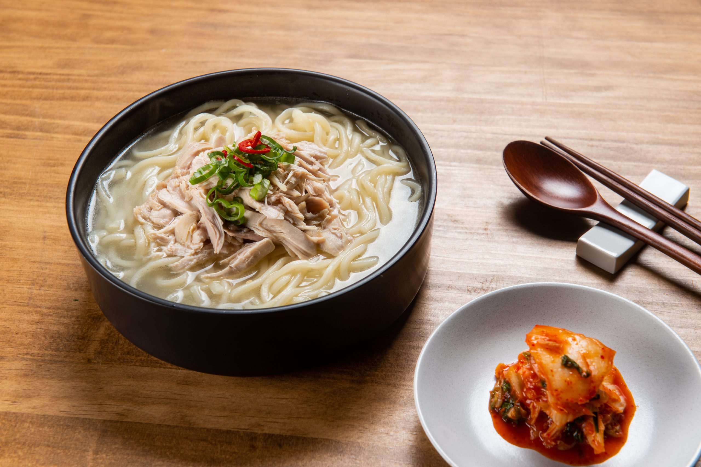

Kalguksu
knife-cut noodles

Kalguksu is a traditional Korean noodle soup made with handmade knife-cut noodles. The noodles are typically made with wheat flour and water, and are served in a broth made with various ingredients such as vegetables, meat, and seafood. Kalguksu is a popular comfort food in Korea, and is often enjoyed on cold days or as a special treat.
Ingredients
- 2 cups of all-purpose flour
- 1/2 cup of water
- 1/2 teaspoon of salt
- 1/2 teaspoon of sesame oil
- 1/2 teaspoon of soy sauce
- 1/2 teaspoon of minced garlic
- 1/2 teaspoon of sesame seeds
- 1/2 teaspoon of chopped green onions
- 1/2 teaspoon of chopped kimchi
- 1/2 teaspoon of chopped zucchini
- 1/2 teaspoon of chopped onion
- 1/2 teaspoon of chopped tofu
- 1/2 teaspoon of chopped mushrooms
- 1/2 teaspoon of chopped carrots
- 1/2 teaspoon of chopped potatoes
- 1/2 teaspoon of chopped beef
- 1/2 teaspoon of chopped pork
- 1/2 teaspoon of chopped chicken
- 1/2 teaspoon of chopped clams
- 1/2 teaspoon of chopped shrimp
- 1/2 teaspoon of chopped squid
- 1/2 teaspoon of chopped octopus
Instructions
- Make the dough by mixing the flour, water, and salt.
- Roll out the dough and cut it into thin strips.
- Boil the noodles in a pot of water until they are cooked.
- Drain the noodles and rinse them in cold water.
- Make the broth by boiling water with sesame oil, soy sauce, garlic, and sesame seeds.
- Add the green onions, kimchi, zucchini, onion, tofu, mushrooms, carrots, potatoes, beef, pork, chicken, clams, shrimp, squid, and octopus to the broth.
- Simmer the broth until the ingredients are cooked.
- Place the noodles in a bowl and pour the broth over them.
- Serve the kalguksu hot.